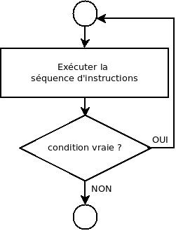

Cette structure est très proche du « tant que » à deux différences près :
En pseudo-code :
faire
séquence d’instructions à exécuter
jusqu’à ce que condition
La condition est une expression délivrant un résultat booléen (vrai ou faux).
Il faut que la séquence d’instructions comprise entre faire
et jusqu’à ce que contienne au moins
une instruction qui modifie la condition de telle manière
qu’elle puisse devenir vraie à un moment donné pour arrêter l’itération.
La tâche est toujours exécutée au moins une fois.

Par exemple :
Après chaque nombre, on demande à l’utilisateur s’il y a encore un nombre à additionner.
// Lit des valeurs entières et retourne la somme des valeurs lues.
module sommeNombres() → entier
encore : booléen // est-ce qu’il reste encore une valeur à additionner ?
valeur : entier // un des termes de l’addition
somme : entier // la somme
somme ← 0
faire
lire valeur
somme ← somme + valeur
lire encore
jusqu’à ce que NON encore
retourner somme
fin module
Avec cette solution, on additionne au moins une valeur.